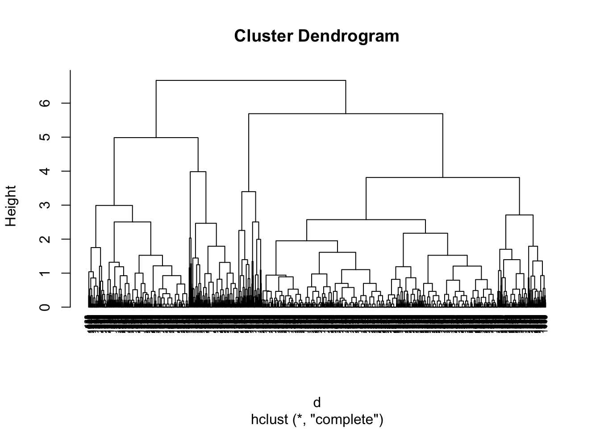
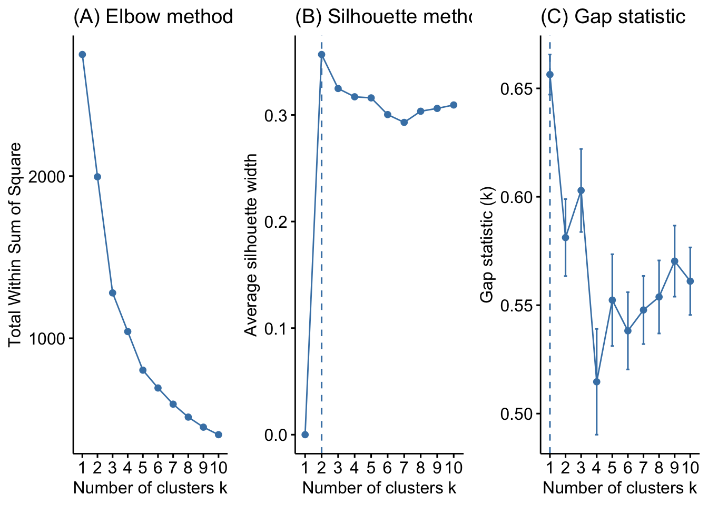
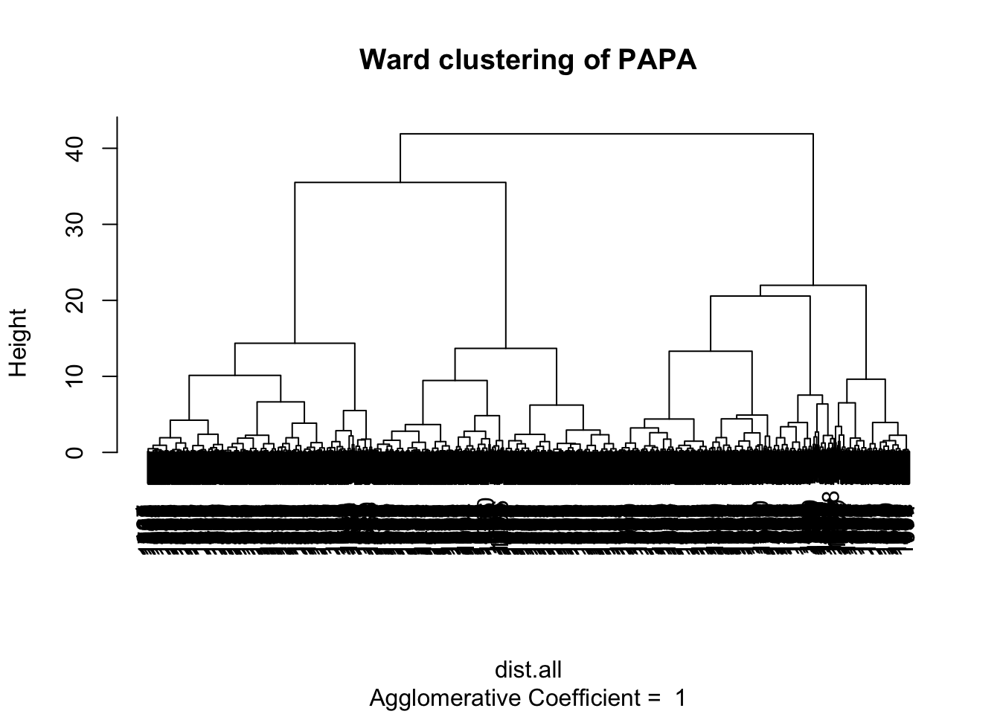

This section of the course book covers the basics of cluster analysis. First, we introduce the foundational topics and then proceed with applied examples in R.
Supervised Learning
Objective: Prediction
Access to a set of variables, \(x_1,x_2,\dots,x_p\), measured on \(n\) observations, and a response \(y\) also measured on those same \(n\) observations.
Objective is to predict \(y\) using \(x_1,x_2,\dots,x_p\)
In many common situations there are a well-developed set of tools for supervised learning:
Regression and classification
logistic regression, trees, random forests, bagging, boosting
Clear understanding of how to assess the quality of obtained results
cross-validation, model fit, etc.
Unsupervised Learning
Objective: Description
A set of statistical tools intended for when we have a set of variables, \(x_1,x_2,\dots,x_p\), measured on \(n\) observations.
Objective is to uncover interesting patterns in the measurements of \(x_1,x_2,\dots,x_p\)
Not interested in prediction because we do not have an associated response variable \(y\)
Can we discover subgroups among the variables or among the observations?
Is there an informative way to visualize the data?
Unsupervised learning is, in some ways, more challenging than supervised learning.
Tends to be more subjective.
No simple goal for the analysis, such as prediction of a response
Often hard to assess the results obtained from unsupervised learning methods because there is no universally accepted mechanism for validating the results
No way to check our work because we do not know the true answer—the problem is unsupervised
The importance of reliable unsupervised learning methods is growing in a number of fields:
A cancer researcher might assay gene expression levels in patients with breast cancer to look for subgroups among the breast cancer samples in order to obtain a better understanding of the disease
An online shopping site might try to identify groups of shoppers with similar browsing and purchase histories to target coupons, sales, etc.
A search engine might choose what search results to display to a particular individual based on the click histories of other individuals with similar search patterns.
Cluster Analysis
Cluster analysis or clustering is the task of grouping a set of objects in such a way that objects in the same group (a cluster) are more similar (in some sense or another) to each other than to those in other groups (clusters).
We seek to partition observations into distinct groups so that the observations within each group are quite similar to each other, while observations in different groups are quite different from each other.
To make this concrete, we must define what it means for two or more observations to be similar or different
most often this is done by the measurement of distance
cluster analysis methods work from dissimilarity measures (e.g., distance matrix)
Person-Oriented Clustering
We can think of cluster analysis as a person-oriented approach in that one objective of cluster analysis is to identify different types of people.
Clustering Algorithms
Many clustering algorithms exist:
Ward’s hierarchical clustering
K-means clustering
Hierarchical clustering
Density-based clustering
Spectral clustering
Mean shift
Affinity propagation
Mixture model (latent profile analysis, latent class analysis)
The majority of class today will cover (1) Hierarchical Clustering.
Hierarchical Clustering
We do not know in advance how many clusters we want
Bottom-up approach (grouping similar observations together)
End up with a tree-like visual representation of the observations called a dendrogram
K-means Clustering
K-means clustering:
Seek to partition the observations into a pre-specified number of clusters
Top-down approach
Hierarchical Clustering
Hierarchical clustering proceeds via an extremely simple algorithm:
Begin by defining some sort of dissimilarity measure between each pair of observations (e.g., Euclidean distance).
Algorithm proceeds iteratively:
Each of the \(n\) observations is treated as its own cluster
The two clusters that are most similar are then fused so that there now are \(n-1\) clusters
Repeat Step 2 until all of the observations belong to one single cluster
Note this produces not one clustering, but a family of clustering represented by a dendrogram.
Hierarchical Clustering
Distances
Euclidean distance is a common distance measure. For two dimensions, it is equal to the sum of squares of difference on \(x\) plus the sum of squares of difference on \(y\). Note, variables can differ in scale so it is important to standardize our inputs.
Euclidian Distance
There are many distance measures.
Distance Measures
A taxicab geometry is a form of geometry in which the usual distance function or metric of Euclidean geometry is replaced by a new metric in which the distance between two points is the sum of the absolute differences of their Cartesian coordinates.
Taxicab geometry versus Euclidean distance: In taxicab geometry, the red, yellow, and blue paths all have the same shortest path length of 12.
Distance Between Clusters
The concept of dissimilarity between a pair of observations needs to be extended to a pair of groups of observations – what’s the distance between clusters?
This extension is achieved by developing the notion of linkage, which defines the dissimilarity between two groups of observations. Four most common types of linkage: complete, average, single, and centroid. An important fifth is the Ward-method.
Complete: Maximal intercluster dissimilarity. Compute all pairwise dissimilarities between the observations in cluster A and the observations in cluster B, and record the largest of these dissimilarities. This is sometimes referred to as farthest neighbor clustering.
Complete Linkage
Single: Minimal intercluster dissimilarity. Compute all pairwise dissimilarities between the observations in cluster A and the observations in cluster B, and record the smallest of these dissimilarities.
Single Linkage
Average: Mean intercluster dissimilarity. Compute all pairwise dissimilarities between the observations in cluster A and the observations in cluster B, and record the average of these dissimilarities.
Average Linkage
Centroid: Dissimilarity between the centroid for cluster A (a mean vector of length p) and the centroid for cluster B.
Centroid Linkage
Ward’s Method: minimize within cluster sum of squares. The linkage function specifying the distance between two clusters is computed as the increase in the error sum of squares after fusing two clusters into a single cluster.
Centroid Linkage
Linkages Applied Example
Let’s take a look at different linkages using this US cities example. First we can calculate the difference among the different cities
Now, let’s start by making a cluster of Boston and New York.
US Map
Now compute new dissimilarity matrix. New matrix depends on the linkage approach.
Complete linkage would use distance from Boston to all other cities because Boston is further than NY
Single linkage would use distance from NY to all other cities because NY is closer than Boston
Average linkage would use the mean of the distances from NY and Boston
Centroid linkage would place a new city half way between NY and Boston and calculate differences from this new city
Resulting Clusters
Dendograms
Now let’s look at the dendograms.
Which one gives us a better solution for the underlying typology?
Interpreting Dendograms
Each leaf of the dendrogram represents one of the \(n\) observations
Moving up the tree, leaves begin to fuse into branches corresponding to observations that are similar to each other
Moving higher up, branches fuse, either with leaves or other branches
The height of the fusion, as measured on the vertical axis, indicates how different the two observations are
Observations that fuse at the very bottom of the tree are quite similar to each other
Observations that fuse close to the top of the tree will tend to be quite different
We can draw conclusions about the similarity of two observations based on the location on the vertical axis where branches containing those two observations first are fused.
Generally we are looking for a level above which the lines are long (between-group heterogeneity) and below which the leaves are close (within-group homogeneity).
Identifying Clusters in Dendograms
Make a horizontal cut across the dendrogram
The distinct sets of observations beneath the cut can be interpreted as clusters
Therefore, a dendrogram can be used to obtain any number of clusters
Researchers often look at the dendrogram and select by eye a sensible number of clusters based on the heights of the fusion and the number of clusters desired.
The choice of where to cut the dendrogram is not always clear.
Example Dendogram
What should we do with this data? 1 2 or 3 groups? You as a researcher have to decide.
Discussion Questions
Identify a dimension or process central to your own interests or research where you think there is a substantial between-person heterogeneity.
Identify a set of variables that might be used to classify individuals into meaningful groups as a means to address this heterogeneity.
With groups or clusters identified how might you empirically assess these groupings?
Hierarchical Clustering in R
Example Data
Our example makes use of an experience sampling data set, but treats these data as though they are cross-sectional. Getting the data and doing a bit of data management (new id variable)
#set filepath for data filefilepath <-"https://quantdev.ssri.psu.edu/sites/qdev/files/AMIBbrief_raw_daily1.csv"#read in the .csv file using the url() functiondaily <-read.csv(file=url(filepath),header=TRUE)#clean-up of variable names so that they are all lowercasevar.names.daily <-tolower(colnames(daily))colnames(daily)<-var.names.daily#creating a new "id" variable#(we had repeated measures nested in people, now they all get different ids)daily$id <- daily$id*10+daily$daynames(daily)
#reducing down to variable setdaily <- daily[ ,c("id","slphrs","weath","lteq","pss","se","swls","evalday", "posaff","negaff","temp","hum","wind","bar","prec")]#names of variablesnames(daily)
Note that cluster analysis does NOT generally work with missing data. Here we simply delete incomplete cases. Other possibilities include imputation, and calculation of distances using most complete subsets.
#removing observations with NAdailysub <- daily[complete.cases(daily), ] describe(dailysub)
The unit of distance may be different for different variables. For example, one year of difference in age seems like it should be a larger difference than one dollar difference in income.
Different variables will be “weighted” differently in the distance calculation. To alleviate this, a common approach is to rescale each variable into a standardized, z-score variable (i.e., by subtracting the mean and dividing by the standard deviation).
Thus, all the variables would then have mean = 0, with differences scales in standard deviation units. Note that this scales everything in relation to the observed sample (which has plusses and minuses).
The R function scale() makes it all very easy.
#scaling all the variablesdailyscale <-data.frame(scale(dailysub, center=TRUE, scale=TRUE))#checking and fixing the id variable (which we did not want standardized)str(dailyscale$id)
We choose a small subset of variables for easy visualization in a bivariate space. We use lteq, a measure of physical activity (Leisure Time Exercise Questionnaire), and posaff, a measure of positive affect.
This is a good toy data set for class purposes, but keep in mind the original nature of the data which might not be the best for cluster analytic purposes.
Clustering Algorithms
We will consider two hierarchical clustering algorithms:
1.Agglomerative clustering:
Commonly referred to as AGNES (AGglomerative NESting)
Bottom- up approachs works in a bottom-up manner.
This is the same procedure we followed above when clustering US cities
Vomplete linkage and Ward’s method are often preferred for AGNES
Divisive hierarchical clustering:
Commonly referred to as DIANA (DIvisive ANAlysis)
Top-down approach works in a top-down manner.
For DIANA, clusters are divided based on the maximum average dissimilarity
Agglomerative Clustering
To perform agglomerative HC with hclust(), we first compute the dissimilarity values with dist() and then feed these values into hclust() and specify the agglomeration method to be used (i.e. "complete", "average", "single", or "ward.D").
First, however, let’s remember that when we think about distances we are imagining each individual as a point in a multivariate space. For example, let’s look at the first three individuals.
In hclust we first need to create a dissimilarity matrix. Here we use Euclidean distance and then perform hierarchical clustering using complete linkage.
library(cluster)# For reproducibilityset.seed(123)# Dissimilarity matrixd <-dist(dailyscale[,c("lteq","posaff")], method ="euclidean")# Hierarchical clustering using Complete Linkagehc1 <-hclust(d, method ="complete" )plot(hc1, cex =0.6, hang =-1)

Alternatively, we can use the agnes() function. This function behaves similar to hclust(); however, with the agnes() function you can also get the agglomerative coefficient (AC), which measures the amount of clustering structure found.
Generally speaking, the closer AC is to 1, the more clustered the data are. An AC above 0.75 is considered strong clustering structure.
# For reproducibilityset.seed(123)# Compute maximum or complete linkage clustering with agneshc2 <-agnes(dailyscale[,c("lteq","posaff")], method ="complete")# Agglomerative coefficienthc2$ac
[1] 0.9938078
# methods to assessm <-c( "average", "single", "complete", "ward")names(m) <-c( "average", "single", "complete", "ward")# function to compute coefficientac <-function(x) {agnes(dailyscale[,c("lteq","posaff")], method = x)$ac}# get agglomerative coefficient for each linkage methodpurrr::map_dbl(m, ac)
average single complete ward
0.9857270 0.9601860 0.9938078 0.9989668
Divisive hierarchical clustering
To perform divisive hierarchical clustering with diana(), we simply feed the data frame into the function and specify the dissimilarity measure to be used (i.e. "euclidean").
Determining the optimal number of clusters is a key step in cluster analysis. Several methods can be used to evaluate the appropriate number of clusters in a dataset. Here are three commonly used methods:
library(factoextra) # for cluster visualization# Plot cluster resultsp1 <-fviz_nbclust(dailyscale[,c("lteq","posaff")], FUN = hcut, method ="wss", k.max =10) +ggtitle("(A) Elbow method")p2 <-fviz_nbclust(dailyscale[,c("lteq","posaff")], FUN = hcut, method ="silhouette", k.max =10) +ggtitle("(B) Silhouette method")p3 <-fviz_nbclust(dailyscale[,c("lteq","posaff")], FUN = hcut, method ="gap_stat", k.max =10) +ggtitle("(C) Gap statistic")# Display plots side by sidegridExtra::grid.arrange(p1, p2, p3, nrow =1)

Dendograms
# Construct dendorgram for the Ames housing examplehc5 <-hclust(d, method ="ward.D2" )dend_plot <-fviz_dend(hc5)dend_data <-attr(dend_plot, "dendrogram")dend_cuts <-cut(dend_data, h =8)fviz_dend(dend_cuts$lower[[2]])

In order to identify sub-groups (i.e., clusters), we can cut the dendrogram with cutree(). The height of the cut to the dendrogram controls the number of clusters obtained. Here, we cut our agglomerative hierarchical clustering model into eight clusters. We can see that the concentration of observations are in clusters 1–3.
# Ward's methodhc5 <-hclust(d, method ="ward.D2" )# Cut tree into 4 groupssub_grp <-cutree(hc5, k =3)# Number of members in each clustertable(sub_grp)
Please remember the usual caution. Our intention here has been simple exposure. When using these methods for a paper or project, do the research necessary to engage the method precisely and with good form.


 Which one gives us a better solution for the underlying typology?
Which one gives us a better solution for the underlying typology?